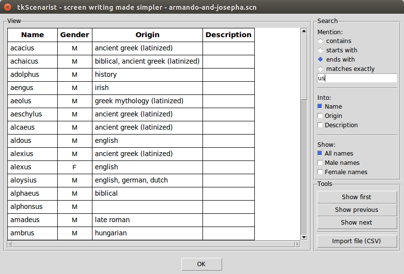
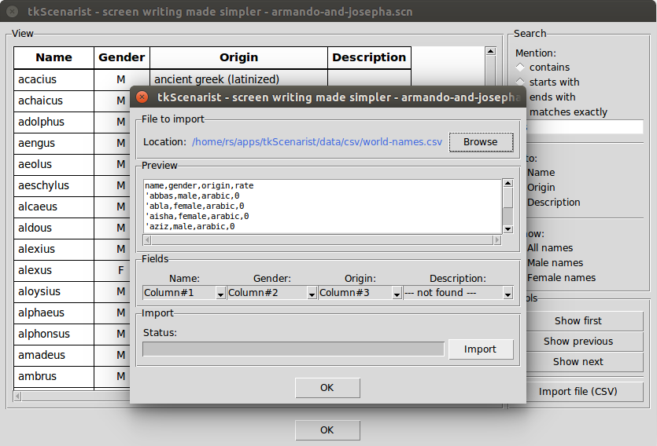

Return to summary.
This tool is aimed to ease character name search among thousands of names coming from all over the world.
It is composed of:
Extra tool panes are NOT resizable.
Return to summary.
By default, all data are shown off without any criteria.
To set a DB query, click on one of contains, starts with, ends
with or matches exactly choice buttons, fill out the mention entry
text, eventually choose which mention (e.g. name, origin, description)
should be concerned, select which type of name you wish (male, female,
both, none) and then wait for automatic query submission.
Each time you make a change into criteria, the automatic query submission maechanism fires up after about half a second.
Return to summary.
Once you got query results, you can browse each page by clicking on one
of Show first (page), Show previous, Show next buttons in 'Tools'
pane.
Please, note numerous number of result pages is generally symptomatic of too imprecise DB query. One should refine criteria to get something more accurate.
Also note each time criteria are changed, the DB query result view is reset to first page of new results.
Return to summary.
Click on Import file (CSV) button at the bottom end of 'Tools' pane.
An importing dialog tool will then popup to help you in adding new names.

In this dialog tool:
Click on Browse button to choose the CSV file you want to import.
CAUTION: only RFC 4180 de
facto standard CSV files are
supported by tkScenarist software.
On correct file format, take a look at 'Preview' data contents and then verify automatic 'Fields' redirections.
Fix incorrect 'Fields' redirections, if necessary, then click on
Import button.
Importation process is fully automatic.
Doublets (names in double into DB) are filtered to keep database as small as possible.
Click on dialog's OK button once finished.
Return to summary.
IMPORTANT: don't forget to save your project regularly, either
with Project > Save menu option or with <Ctrl-S> keyboard shortcut.
Return to summary.
Return to homepage.